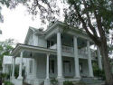
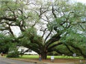
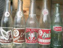

A Taste of the Old South

- 
- 
- 

Josie Bell Federick, born in 1921 in Boston, a
rural section of Thomasville, Georgia. This was home to most
of her family including her parents and 12 siblings. Mrs. Federick
later married and gave birth to 11 children of her own which was
common place in the days of old.
Thomasville, Georgia was and still does represent old southern
charm. Its streets are laid with handmade masonry and sidewalks
draped with beautiful Big Oaks, Banana Plant Pups and Pecan Mahan
trees. As you stroll through the city, the Victorian styled homes
exudes what the South is all about. And that's just plain ole comfort
and ease.